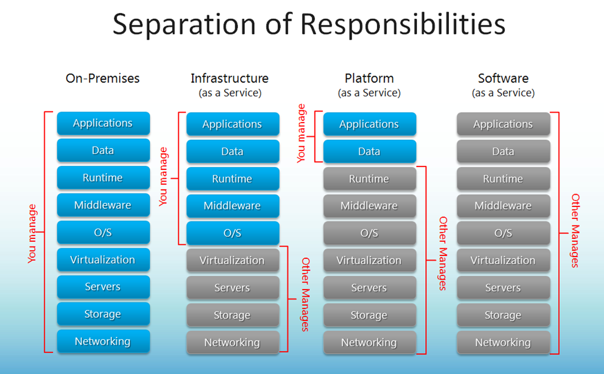
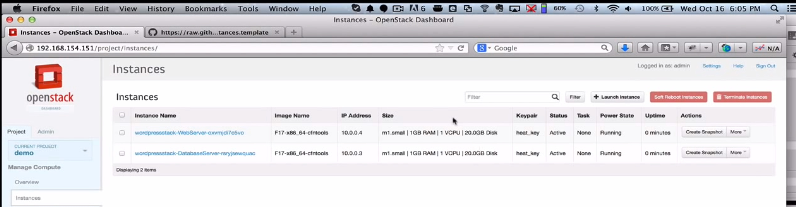
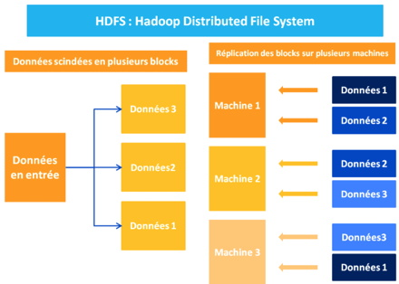

Cloud and Big Data
What the hell is that??
Created by Pierre Zemb / @PierreZ
+Me
- French Engineer student at ISEN Brest
- CIR student
- Part-time internship at Crédit Mutuel Arkéa
Just to clarify
I'm just a student!

Why this presentation?
- I wanted to have a good point of view about Big data and cloud
- they are unknown at ISEN
- It's something big obviously
Cloud? Like in the sky?
3 types of cloud
- Infrastructure as a Service
- Platform as a Service
- Software as a Service
Explanations
Examples
- IaaS(Infrastructure as a service):
Amazon EC2, Windows Azure, Rackspace - PaaS(Platform as a service):
AWS Elastic Beanstalk, Heroku, Force.com, Google App Engine - Saas(Software as a service):
Google Apps, Microsoft Office 365
Hadoop doesn't belong to this !
4 Reasons Why Development in the Cloud Makes Sense
- SaaS hosted solution are cool
- Great for distributed teams
- Effortlessly scalable
Overview of Openstack 1/2

Overview of Openstack 2/2
Overview of Juju 1/2
Overview of Juju 2/2
What's Big data?
Size does matter 1/2
- Facebook owns 300 petabytes of data and generates 500 terabytes of information per day
- The experiments in the Large Hadron Collider produce about 15 petabytes of data per year
- Steam delivers over 30 petabytes of content monthly
Size does matter 2/2
- At its 2012 closure of file storage services, Megaupload held ~28 petabytes of user uploaded data
- The 2009 movie Avatar is reported to have taken over 1 petabyte of local storage at Weta Digital for the rendering of the 3D CGI effects
- Google processed about 24 petabytes of data per day in 2009
Why do we need to make it big? 1/2
90% of the data in the world today has been created in the last two years alone
Why do we need to make it big? 2/2
Big Data = 3 V's
- Volume
- Velocity
- Variety
What's the objective?
Bring together and analyze large pools of data to discern patterns and make better decisions, which are impossible with regular technologies
The pros
- scalability
- open source
- fail-safe system
The cons
Big data is already here
We Are Data
Hadoop
Nice elephant! But what is it?
Quote from Wikipedia:
Apache Hadoop is an open-source software framework for storage and large scale processing of data-sets on clusters of commodity hardware created by Yahoo.
Where Is It From?
Apache Hadoop's MapReduce and HDFS components originally derived respectively from:
- Google's MapReduce paper
- Google File System (GFS) papers
The power of Hadoop
- Hadoop Distributed File System (HDFS) - a distributed file-system that stores data on commodity machines
- Hadoop MapReduce - a programming model for large scale data processing.
Some key words...
- Job Tracker
- Task Tracker
- Name Node
- Secondary node
- Data Node
What about an recap ?
Hadoop Distributed File System
HDFS is good for:
- Very large files
- Write once, read many-times
- Any hardware
and not good for:
- Low-latency access
- Lots of small files
- random writing
How does it work?
(Sorry guys, it's in French)
Map/Reduce
3 phases
- Map phase
- Shuffle phase
- Reduce phase
Why is it so good?
Data locality optimization
Example